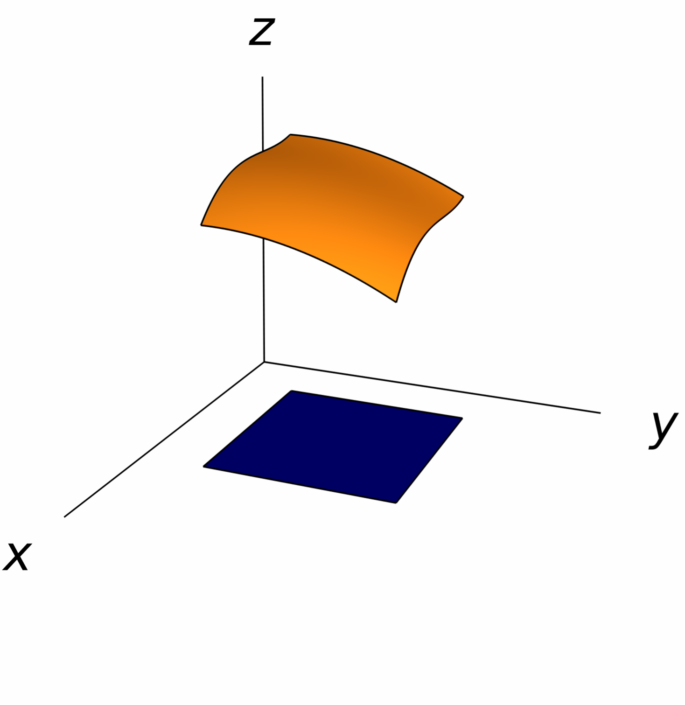
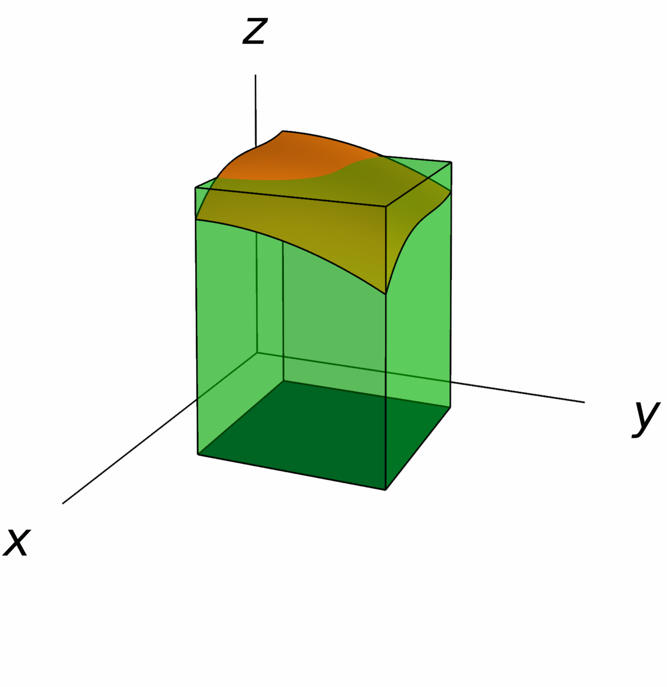
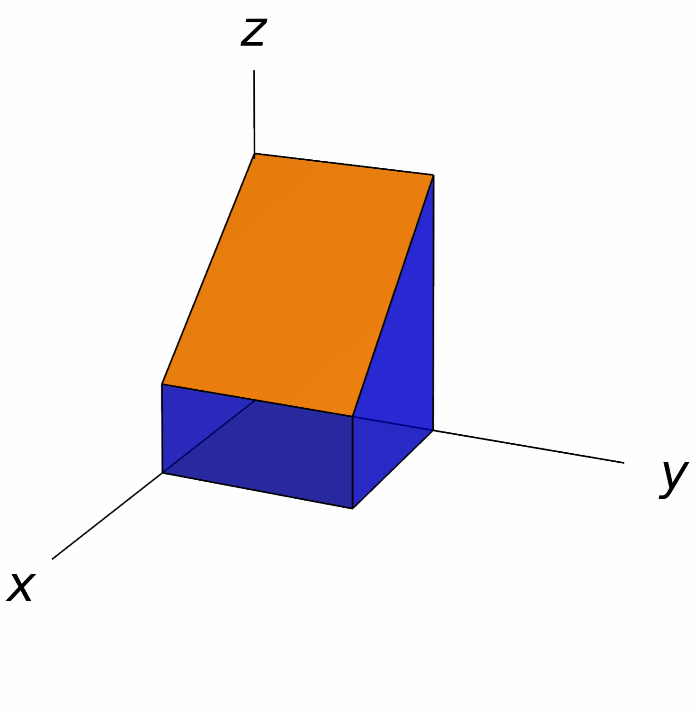
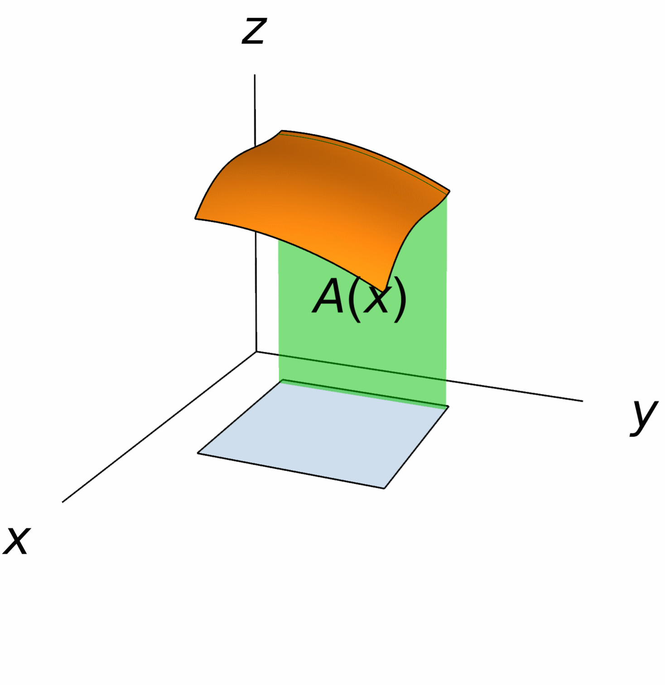

Multiple Integrals
The purpose of this chapter is to introduce integration for functions of several variables. The geometric motivation behind the integral will be essentially a higher-dimensional version of the integral of a function $y=f(x)$ as the area under the curve $y=f(x)$. Moreover, we will see that computing the integral of a function of several variables amounts to finding "iterated integrals", so that once again using the techniques from single variable calculus will be instrumental for performing integrals in more variables.
Double Integrals
In this section we focus on constructing the integral of a function $z=f(x,y)$ of two variables over a rectangle of the form \[ [a,b]\times [c,d] = \big\{ (x,y)\mid a\leq x\leq b,\,c\leq y\leq d \big\}. \]
Suppose $z=f(x,y)$ is a function defined on the rectangle $R=[a,b]\times [c,d]$, and that $f(x,y)\geq 0$ for all points $(x,y)$ in $R$. Our objective is to find the volume of the solid $S$ that lies in between $R$ and the graph of $S$.
In order to estimate the volume of $S$, we consider a partition of $R$ into subrectangles. To do this, we break the interval $[a,b]$ into subintervals of the form $[x_{i-1},x_{i}]$, where $i=1,\,\dots,\,n$ and $ a=x_0 < x_1 < \cdots < x_{n-1} < x_n=b $. Similarly, we break $[c,d]$ into the subintervals of the form $[y_{i-1},y_{i}]$, where $i=1,\,\dots,\,m$ and $ c=y_0 < y_1 < \cdots < y_{n-1} < y_m=d $. Then, $R$ is decomposed into the subrectangles $R_{ij}=[x_{i-1},x_{i}]\times [y_{j-1},y_j]$.
Now, for each subrectangle $R_{ij}$ choose a point $p_{ij}$ inside it. The part of $S$ that lies above $R_{ij}$ can be estimated with a prism whose base is $R_{ij}$ and whose height is $f(p_{ij})$. Moreover, the volume of this prism is \[ V_{ij}=f(p_{ij})(x_{i}-x_{i-1})(y_j-y_{j-1}). \]


In conclusion, the volume of $S$ (the solid lying above $R$ and below the graph of $S$) can be estimated by \[ V\approx\sum_{i=1}^n\sum_{j=1}^{m}V_{ij} =\sum_{i=1}^n\sum_{j=1}^{m}f(p_{ij})(x_{i}-x_{i-1})(y_j-y_{j-1}). \] Intuitively, these estimates of the volume become more accurate as we take more refined partitions of $R$ (that is, as we make $n$ and $m$ large). Motivated by this, we establish the following definition:
For instance, the function in the above pictures is integrable, and most of the functions that we will be working with are integrable. This is due to the following fact.
Some double integrals can be evaluated directly by simply knowing the volume of certain solids in three-dimensions.
Solution.
In the graph from the right, we see that the region between the graph of $f$ and the rectangle $R$ is the union of two solids:
- a parallelepiped whose dimensions are $2$, $2$ and $1$, and thus its volume is $2\cdot 2\cdot 1=4$,
- and a prism of width $2$ whose side faces are right triangles whose base and height are $2$ and $2$, so its volume is $\tfrac12 \cdot 2\cdot 2=2$.
Therefore, the desired integral is just the added volume of these two solids: \[ \iint_R (3-x)\,dxdy=4+2=6. \]

Iterated Integrals: Fubini's Theorem
While the definition of the double integral is useful to get a geometric intuition of its meaning, it is hardly useful for computing double integrals in practice. Here we will see how we can reduce the calculation of a double integral into that of two single-variable integrals.
Suppose $f(x,y)$ is a function defined on the rectangle \[ R=[a,b]\times [c,d]. \] For each $x$ in $[a,b]$, the integral \[ A(x)=\int_{c}^d f(x,y)\,dy \] is defined to be the integral of the function $f_x\colon [c,d]\to \RR$ given by $f_x(y)=f(x,y)$. In other words, the above integral is the result of integrating $f(x,y)$ with respect to $y$ while treating $x$ as a constant.

Geometrically, $A(x)$ represents the area under the curve given by $f_x$ on the interval $[c,d]$.
Now, $A(x)$ is itself a function on the interval $[a,b]$, so we can consider the integral \[ \int_a^b A(x)\,dx = \int_a^b\Bigg(\int_c^df(x,y)\,dy\Bigg)\,dx. \] Usually we write this integral simply as \[ \int_a^b\int_c^df(x,y)\,dy\,dx. \] This integral is usually known as an iterated integral. Doing the appropriate changes, one can also define the iterated integral \[ \int_c^d\int_a^bf(x,y)\,dx\,dy =\int_c^d\Bigg(\int_a^bf(x,y)\,dx\Bigg)\,dy. \]
Solution.
The first iterated integral is \[ \int_0^2\int_{-1}^1 (x^2-xy)\,dy\,dx = \int_0^2\bigg[x^2y-\frac12xy^2\bigg]_{-1}^1\,dx = \int_0^22x^2\,dx = \bigg[\frac23x^3\bigg]_0^2 = \frac{16}{3}. \] The second iterated integral gives \[ \int_{-1}^1\int_0^2 (x^2-xy)\,dx\,dy = \int_{-1}^1\bigg[\frac13x^3-\frac12x^2y\bigg]_0^2\,dy = \int_{-1}^1\bigg(\frac83-2y\bigg)\,dy = \bigg[\frac83y-y^2\bigg]_{-1}^1 = \frac{16}{3}. \]
Interestingly, both iterated integrals give the same number independently of the chosen order of integration. What is more important is that both iterated integrals actually coincide with the double integral \[ \iint_R (x^2-xy)\,dA\qquad\textsf{where} \qquad R=[0,2]\times[-1,1]. \] This fact is true for all continuous functions, and it is known as Fubini's theorem:
Although Fubini's theorem is hard to prove, it lends itself to the intuitive idea that the volume of a solid is obtained by integrating the area of it's-cross sections.